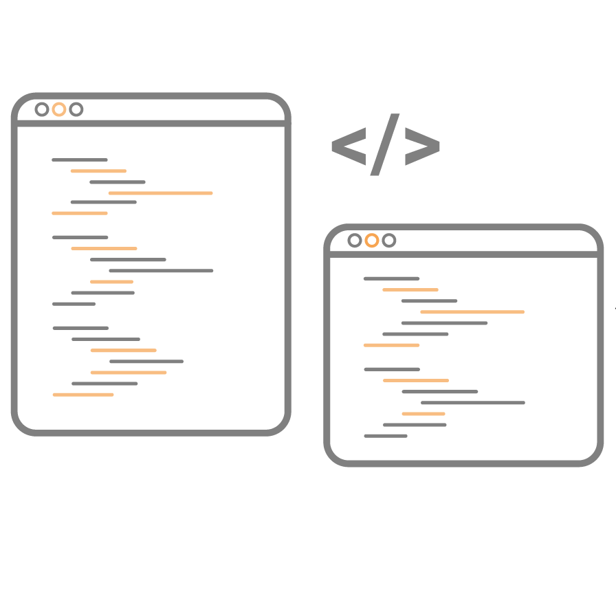

Programowanie stron internetowych
Od zawsze fascynowało mnie, jak działają strony internetowe. Z czasem odkryłem, że mogę je tworzyć samodzielnie, korzystając z HTML i CSS. To moje hobby,
które sprawia mi ogromną frajdę i pozwala rozwijać kreatywność. Na tej stronie opowiem, czym jest HTML i CSS, dlaczego lubię programowanie i pokażę moje pierwsze projekty.
Czym jest HTML i CSS?
HTML:
Jest to język, który buduje „szkielet” każdej strony internetowej.
Dzięki niemu możemy dodawać nagłówki, akapity, linki, obrazki czy listy.
Przykład:
CSS:
Odpowiada on za wygląd strony – kolory, czcionki, odstępy, układ elementów.
Dzięki CSS zwykły tekst może zamienić się w coś atrakcyjnego wizualnie.
Przykład:
Dlaczego lubię programowanie?
- Kreatywność
- Tworzenie stron daje mi możliwość wyrażania siebie. Każda linijka kodu to krok do stworzenia czegoś nowego i unikalnego.
- Satysfakcja:
- Gdy widzę, że moja strona działa i wygląda tak, jak chciałem – to daje ogromną radość.
- Rozwój umiejętności:
- Programowanie uczy logicznego myślenia, cierpliwości i dokładności. Wiem, że te umiejętności przydadzą mi się też w innych dziedzinach życia.
- Dzięki niemu także:
- Mogę tworzyć coś własnego.
- Uczę się nowych technologii.
- Mam frajdę z testowania różnych efektów.
- Mogę się pochwalić swoimi projektami znajomym.